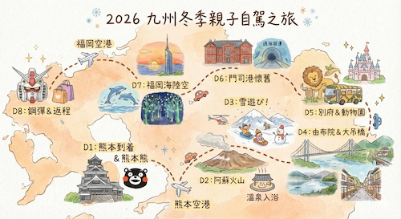

🇯🇵 2026 九州冬季親子自駕 8日遊
(最終定案版 V10.1)
📅 日期：2026/01/20 (二) ～ 2026/01/27 (二)
👨👩👧👦 成員：2位大人、2位小孩（9歲 & 3歲）



🚨 行前最重要！關鍵檢查表 (Must-Do Checklist)
- 🚗 租車關鍵：務必確認已指定【雪胎 (Snow Tires)】。
- 📍 甲租乙還：確認租車公司知悉「熊本機場(KMJ)取車，福岡機場(FUK)還車」。
- 🎫 提前預約：Day 7 teamLab 門票(下午場)、Day 5 動物園叢林巴士(現場排)。
- 🧥 冬季穿著：戶外重點區必備防風保暖裝備 (毛帽/手套/圍巾)。
✈️ 航班資訊 (星宇航空)
- 去程 (JX846)：2026/01/20 (二) 07:30 TPE ➔ 10:35 KMJ
- 回程 (JX841)：2026/01/27 (二) 19:10 FUK ➔ 20:50 TPE
🗺️ 每日詳細行程攻略
Day 1 (1/20 二)：抵達熊本、與部長相見歡 (輕鬆模式)
- 10:35 抵達熊本機場 ➔ 辦理租車手續 (預計12:00前取車)。
- 中午：開車前往熊本市區，午餐 (推薦：勝烈亭豬排)。
- 下午：
- 熊本熊部長辦公室 (Kumamon Square)：💡查好表演時間提早卡位，專心看部長。
- 城彩苑：表演結束後，到城彩苑逛街吃點心，感受城下町氣氛。(今日先在城外活動，保留體力)
- 晚餐：市區馬肉料理或熊本拉麵。
- 🏠 住宿：熊本城飯店 (Check-in休息)
Day 2 (1/21 三)：早安熊本城 ➔ 阿蘇火山震撼
- 上午 (攻城)：飯店早餐後退房。💡利用地利之便，一早 9:00 「進去」參觀熊本城天守閣內部，避開人潮。
- 接近中午：離開熊本，開車往阿蘇 (約1.5hr)。
- 下午 (阿蘇)：
- 阿蘇直升